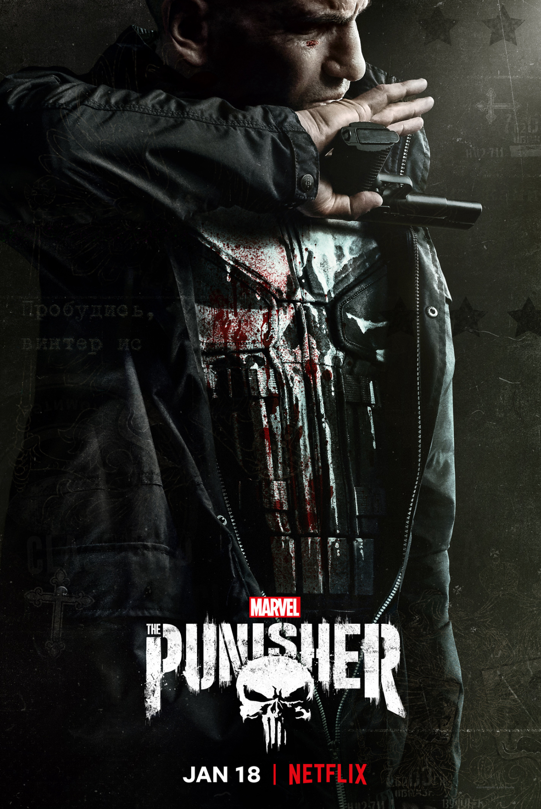

TV series you've watched will appear here.
Recently watched.
No series viewed yet. Search for some to add to your lists!
Favourites
No favourites added yet. You can heart TV shows to add the, to your list!
